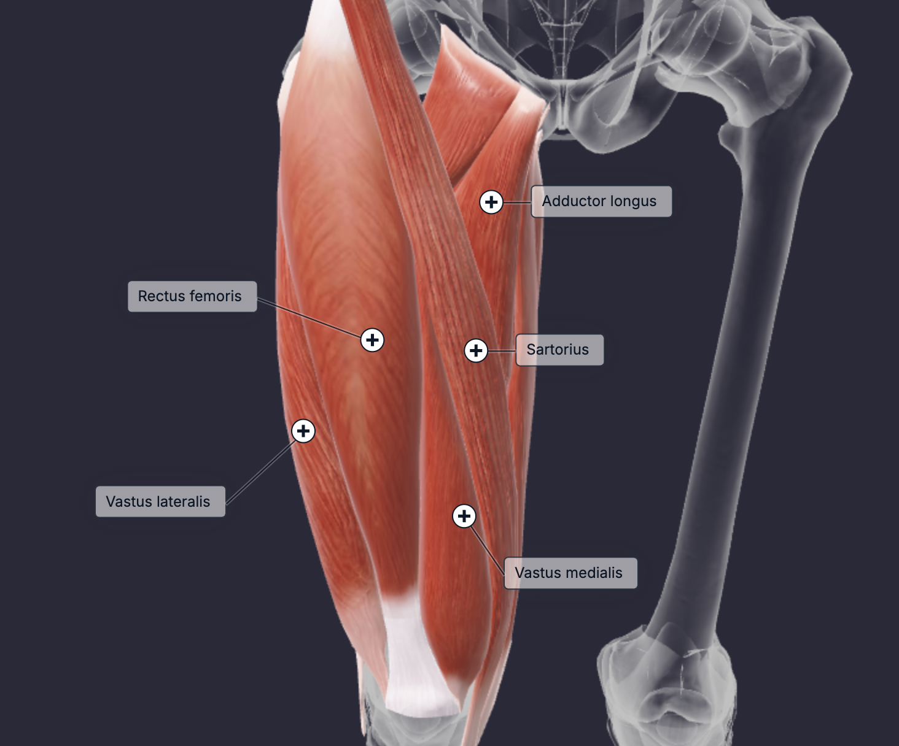

The quadriceps femoris is the most voluminous muscle of the body. It is a hip flexor and knee extensor that consists of four individual muscles. The four muscles are the rectus femoris, vastus lateralis, vastus medialis, and vastus intermedius. They form the main bulk of the thigh and collectively are one of the most powerful muscles in the body. The quadriceps all work together to extend the knee, with the rectus femoris also flexing the hip and the vastus medialis adducting the thighs. The quadriceps femoris are used every day when you walk, jump, climb stairs, etc.
The main functions of the quadriceps femoris are to extend the knee and flex the hip. Thus a pressing pattern and a extension pattern will cover all the muscles of the quadriceps femoris. A pressing pattern will primarily target the vastus lateralis and vastus medialis and a extension will help target the rectus femoris, which often gets less activation during a pressing pattern.
Pick one exercise from the pressing patterns and do a leg extension for 2-3 sets each based on preference.
